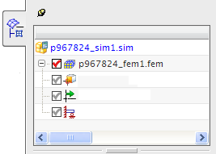
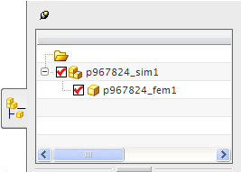

仿真 (.sim) 文件具有以下特性：
它是一个 NX 装配
它包含的唯一组件是一个 FEM 文件
包含用于定义分析的载荷、约束及其他边界条件
可以替代在组件 FEM 文件中定义的物理属性、材料属性和显示属性
包括特定于求解器的数据，其中包含一个或多个解算方案以及可重用的求解器特定建模对象
|

|
|

|
组件 FEM 充当仿真的主模型。您可以在定义仿真时访问 FEM 文件中的网格和多边形几何体。更新 FEM 文件时，基于几何体的载荷、约束和对象也会更新。
由于多个仿真文件可以包含作为组件的同一 FEM，因此可对不同的分析重用网格数据。